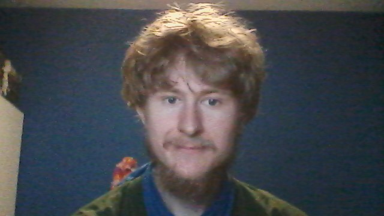

|  |
Hallo. Mijn naam is Bastiaan Gerd Meskers, maar noem me maar Bas. Ik ben geboren in Alkmaar, maar opgegroeid in Uitgeest. Uitgeest heeft alleen geen middelbare scholen dus ben ik terug naar Alkmaar gegaan om daar het Atheneum te volgen aan het Petrus Canisius College.
Vervolgens ben ik een paar jaar naar Einhoven verhuisd om daar aan de TU Einhoven de studie software science te volgen. Deze universitaire studie beviel me alleen niet helemaal. We leerden vooral veel van de achterliggende wiskunde en modellen van computers, maar niet waar het daadwerkelijk nuttig voor was. Dat vond ik zelf erg jammer.
Mijn volgende studie was aan de hogeschool inholland in Alkmaar. Daar heb ik twee jaar technische informatica gevolgd. Met deze studie ben ik gestopt omdat ik het minder interressant vond om met hardware interfacing te werken. De grote moeilijkheid in de studie zat voornamelijk in het uitzoeken hoe anderen het systeem dat je probeert aan de praat te krijgen hadden te ontworpen. Ik vind het fijner om creatief bezig te zijn en zelf dingen te ontwerpen.
En dat brengt ons bij de huidige studie aan Inholland Haarlem. Van deze studie verwacht ik een wat meer 'traditionele' informatica opleiding waarbij we zullen leren hoe systemen werken en hoe deze in elkaar te zetten. Zowel van de voor als achterkand. Ik heb al een redelijke basiskennis over programmeren en wiskunde. Daarentegen weet ik een stuk minder af van ontwerp en het in elkaar zetten van grotere projecten. Bij het vak web design hoop ik van dat eerste punt meer te leren.
Maar het leven gaat niet alleen om carrière. In mijn vrije tijd speel ik voornamelijk veel video games, maar ook speel ik graag bordspellen en rollenspellen zoals dungeons and dragons. Hier heb ik ook een vast groepje vrienden voor waar ik elk weekend mee samen kom. Ik heb in het verleden ook veel gehouden van het lezen van boeken. Dit probeer ik de laatste tijd weer een beetje op te pakken.